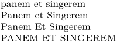

Syntax
| \setcharactercasing[...] | |||||||||
| [...] |
|
||||||||
Description
\setcharactercasing is a switch that changes the case subsequent words have.
Example
-
\setcharactercasing[word] panem et Singerem\par \setcharactercasing[Word] panem et Singerem\par \setcharactercasing[Words] panem et Singerem\par \setcharactercasing[WORD] panem et Singerem\par
- 
See also
- \sc — start using small caps (preserve capitals)
- \cap — turn text into small caps
- \Cap — turn first character into small caps
- \Caps — turn first character of each word into small caps
- \CAP — change specific letters to small capitals (MkII)
- \Word — turn first character into uppercase
- \Words — turn first character of each word into uppercase
- \WORD , \WORDS — turn text into uppercase
- \setcharactercasing — Pass casing command (Word, WORD, etc) as a keyword
- typo-cap.mkiv
- typo-cap.mkiv , font-pre.mkiv
Help from ConTeXt-Mailinglist/Forum
All issues with: